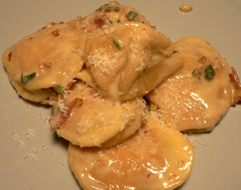

Pumpkin ravioli with bacon
We got home from Boston today to find bare cupboards and a sadly empty refrigerator. I decided to brave the Sunday afternoon crowd at Whole Foods just to get something on the table.
When the store is that crowded, nothing is really tempting. I get more annoyed in each aisle as I get run over again and again by people pushing around carts with one bag of organic iceberg lettuce in them. Why doesn’t this Whole Foods have the miniature, efficient, basket carts? Is it because of the escalator situation? Or because they just want people to fill up those carts with expensive olive oil?
Needless to say, I didn’t have a good trip to the store, and I gave in to laziness by buying 12 fresh pumpkin ravioli for $6.99. Cheaper than takeout or going out, I told myself. I know that pumpkin is horribly inappropriate for a spring meal, but the thought of it wading in a sauce of bacon and cr√®me fra√Æche was more than I could resist. I picked up the bacon and some sage, navigated my way through the express lines, and had dinner ready thirty minutes later.

To make the delicious sauce, I sautéed the bacon until it was nearly crispy, using a paper towel to sop up most of the fat. I added two cloves of garlic (minced), about ten chopped sage leaves, and a half cup or so of crème fraîche. At the last minute I added about a tablespoon of pine nuts, which I would have toasted if I thought of it earlier, and some parmesan.
I don’t need to tell you how good the bacon tasted with the pumpkin pur√©e inside the ravioli. The cream made it all rich and delightful. Freshly stuffed pasta seems to be worth it. It’s cheaper than buying meat for two people, much easier to prepare, and it’s a nice change from the ordinary routine. Uncle Teddy and I used to buy it frozen from FreshDirect almost every week. It’s cheaper from there, of course, and just as good.
Add a comment